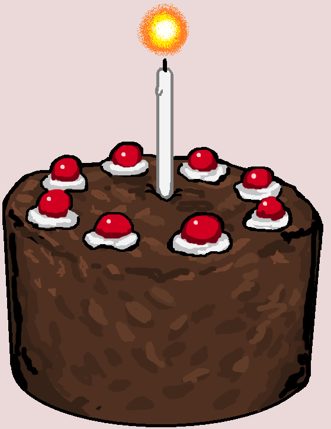

Black Forest Cake Guide
This site will help guide you step-by-step on how to make a traditional Black Forest cake. Each section breaks down the process into simple instructions so beginners can follow along easily.

Start Here
Begin with the ingredients, then follow each step in order to complete your cake.